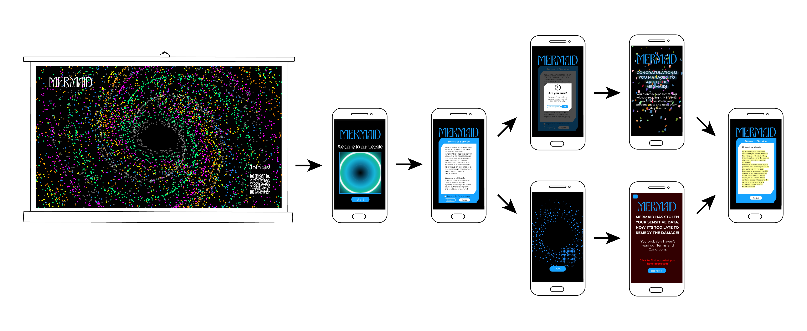

Mermaid
Creative coding
2023
Brief
Create a possible artistic exhibition using p5.js inspired by the theme of presence.
In a world in which technology is rendered invisible and intangible, the challenge was to be able
to highlight invisible steps that we fail to notice in our daily interaction with it.

Concept
We have interpreted this concept of making visible what we cannot grasp
with passive acceptance of the Terms and Conditions of use required to access any kind of online service.
Most people do not read what they agreed to use the applications.
Our goal with Mermaid is to make users think about the personal information they upload on the Internet
every day, highlighting the inability of the users to control their personal data by agreeing to share
them with third parties.

Mermaid
Mermaid is composed by a projector that shows a big spiral with all
the stolen data and a QR code that permits to interact with the exhibition.
After the users scan the code, they have to accept the Terms and Conditions of Mermaid.
In this Terms and Conditions, the users will be notified that their data is about to be
stolen and will no longer be under their control. After having accepted this terms, users'
camera and microphone data are going to be used by Mermaid, showing them in the projector representation.
In the user’s device is going to appear a representation of his camera data pulled towards the center:
data theft has begun. The user’s spiral is characterized by a color, which is the same that represent
the user in the big spiral, so everyone that interacts with Mermaid at the same time can recognize himself.


Team
Sarah Cosentino / Clara Di Bella / Irene Fazzari / Alessandra Palombelli